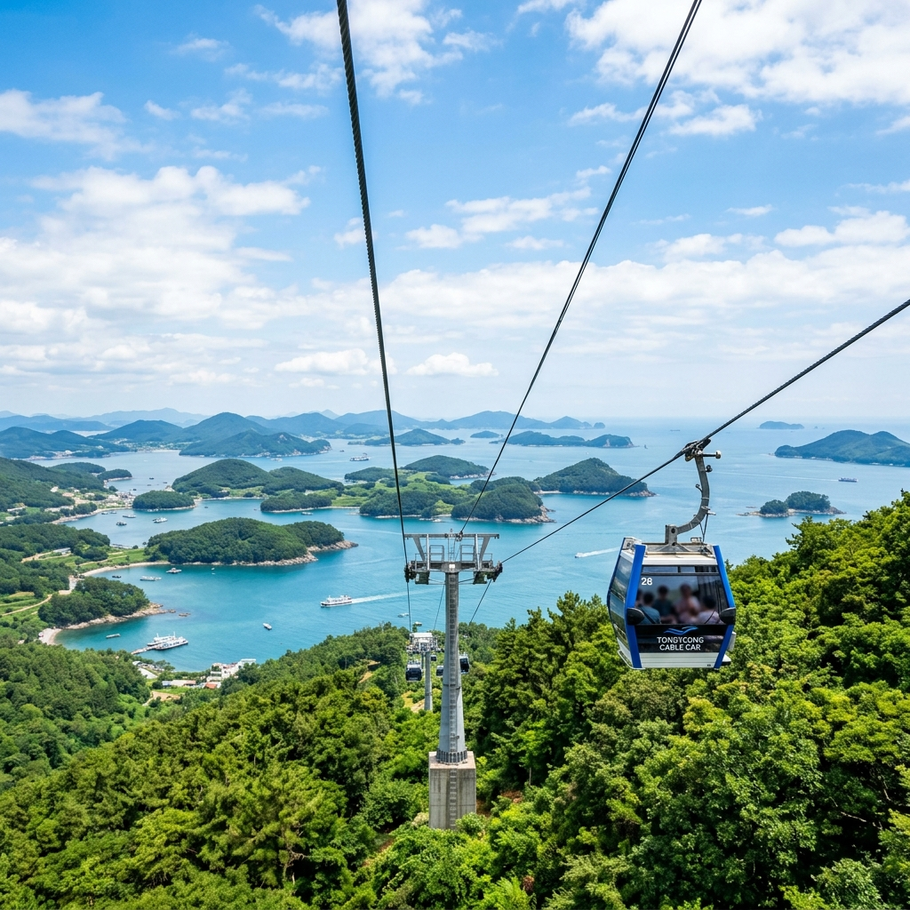
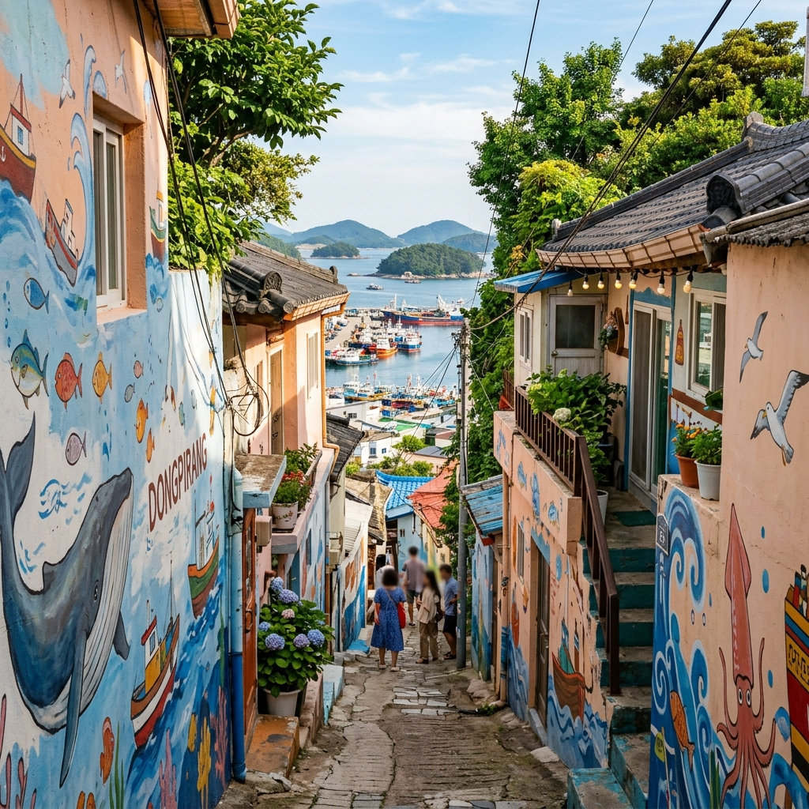
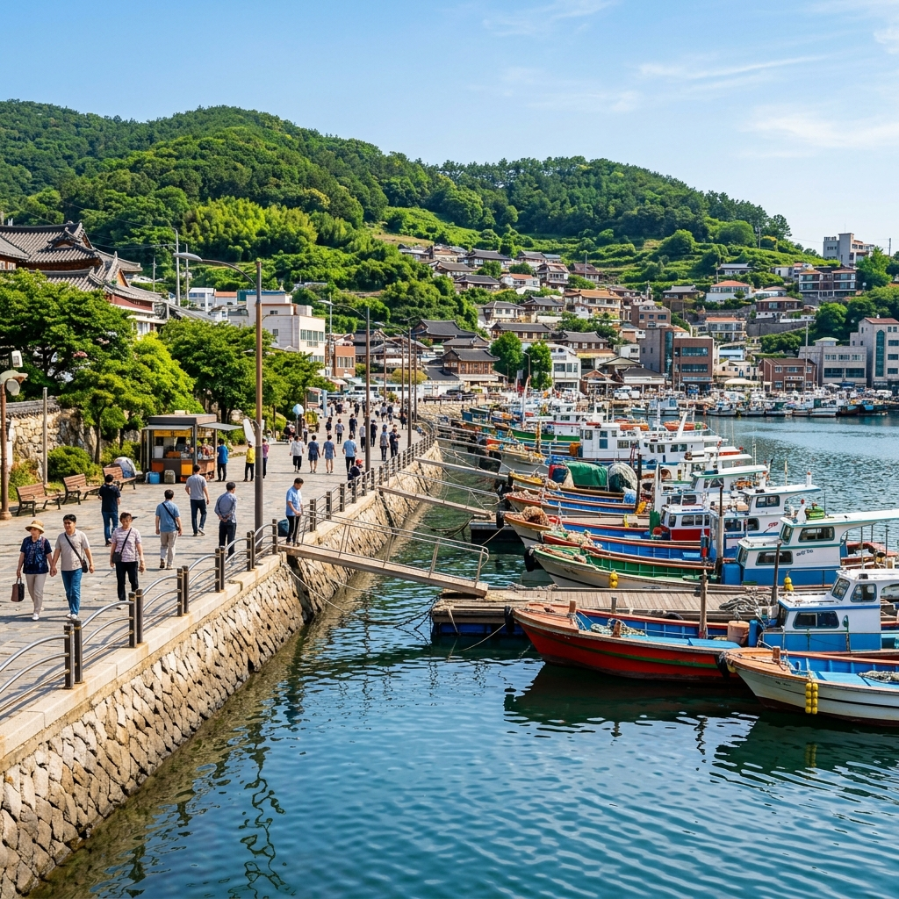

통영은 4~5월 봄꽃 시즌과 7~8월 여름 휴가철 사이인 6월에 가장 여유롭게 즐길 수 있습니다.
케이블카 줄도 짧고, 동피랑 골목도 붐비지 않으며, 식당도 자리가 넉넉합니다. 여기에 남해 초여름 햇빛이 한려수도를 더욱 선명하고 반짝이게 만들어 사진 퀄리티도 올라갑니다.
기온은 20~28도 사이를 오가며 산책하기에 쾌적합니다. 통영은 거제도·한산도·욕지도 등 인근 섬과 연결되는 여객선이 발달해 있어 일정에 여유가 있다면 섬 여행으로 연계하기도 좋습니다.
통영 케이블카는 미륵산 기슭에서 정상(해발 461m) 부근까지 약 1,975m를 연결합니다.
8인승 자동 순환식 곤돌라로, 탑승 시간은 약 9분입니다. 2026년 기준 이용 요금은 대인 왕복 17,000원, 소인(만 4세~초등학생) 왕복 13,000원입니다. 운행은 일반적으로 오전 9시 30분부터 시작하며 계절·날씨에 따라 변동됩니다.
매월 2번째·4번째 수요일은 정기 휴장이므로 방문 전 공식 홈페이지(cablecar.ttdc.kr)에서 반드시 확인하세요. 날씨가 맑고 시야가 트인 날을 골라 방문하는 것이 가장 중요합니다. 흐리거나 안개 낀 날에는 파노라마 조망이 크게 제한됩니다.

케이블카 상부 정류장에서 조금 걸어가면 스카이워크에 닿습니다.
강화유리 바닥 위에 올라서면 발아래로 한려수도가 보입니다. 아찔하면서도 황홀한 이 경험은 어떤 사진으로도 온전히 담기 어렵습니다. 맑은 날 오전 10시~낮 12시 사이에 방문하면 역광 없이 섬들의 윤곽이 가장 또렷하게 보입니다.
스카이워크 주변으로 360도 전망대가 이어지며 통영 시내·통영항·거제도 방향·창선도 방향 등 각기 다른 각도의 풍경이 펼쳐집니다. 날씨가 좋은 날에는 멀리 일본 대마도가 보인다는 말도 있을 만큼 조망이 탁월합니다. 정상 탐방로를 따라 걸어서 하산하는 코스(약 1.5~2시간)도 추천합니다.
케이블카 탑승을 마치고 내려오면 동피랑 벽화마을로 향합니다.
통영 중앙시장 뒤편 언덕 위에 자리한 이 달동네는 해마다 새로운 벽화 공모전을 통해 작품이 교체됩니다. 따라서 재방문해도 새로운 골목을 발견하는 재미가 있습니다. 좁은 계단 골목을 올라가다 보면 갑자기 통영항과 한려수도가 펼쳐지는 전망 포인트가 나타나는데, 이 순간이 동피랑 최고의 장면입니다.
6월의 파란 하늘과 알록달록 벽화, 그 뒤로 빛나는 바다가 한 프레임에 담기는 사진이 SNS에서 폭발적인 반응을 얻는 이유를 실감합니다. 마을 주민들이 실제 거주하는 공간이니 조용히 탐방하고 사유지 진입에 주의하세요.
동피랑과 함께 꼭 둘러봐야 할 곳들을 소개합니다.
서피랑은 동피랑 반대편 서쪽 언덕으로, '99계단'이 유명합니다. 동피랑보다 조용하고 통영 시내를 내려다보는 각도가 달라 다른 느낌의 사진을 찍을 수 있습니다. 세병관은 조선 시대 삼도수군통제영 본영으로 사용된 건물로, 경복궁 경회루·여수 진남관과 함께 현존하는 조선 3대 목조건축물 중 하나입니다.
전혁림미술관은 통영 출신 색채 화가 전혁림 화백의 작품을 전시한 미술관으로, 외관 자체가 다채로운 타일 모자이크 예술 작품입니다. 동피랑 방문과 함께 묶으면 통영의 예술적 감성을 충분히 흡수할 수 있습니다.

통영 방문에서 가장 즐거운 부분 중 하나가 바로 먹거리입니다.
충무김밥은 통영의 옛 이름 충무에서 유래한 작은 참기름 김밥으로, 깍두기와 꼴뚜기무침을 곁들여 먹습니다. 강구안 일대와 중앙시장에서 쉽게 찾을 수 있으며, 1만 원 내외로 배불리 즐길 수 있어 가성비가 좋습니다. 통영 꿀빵은 단팥 소를 넣어 튀긴 도넛형 빵으로, 갓 나온 것이 가장 맛있습니다.
멍게비빔밥은 6월이 제철인 통영 특산물 멍게를 활용한 비빔밥으로, 멍게의 향긋하고 씁쓸한 맛이 밥과 어우러지는 독특한 경험입니다. 통영 시내 어느 식당에서나 찾을 수 있으며 현지인들의 단골 메뉴입니다.
통영은 인근 섬 여행의 출발점으로서도 매력적입니다.
한산도는 이순신 장군이 삼도수군통제영을 두었던 역사의 섬으로, 제승당과 한산정 탐방이 가능합니다. 통영 여객터미널에서 배로 약 25분이면 닿으며 당일치기로 충분합니다. 욕지도는 통영에서 배로 약 1시간 거리에 있는 비교적 큰 섬으로, 자전거나 전동 킥보드 대여가 가능하며 6월에는 초록 언덕과 푸른 바다가 어우러진 청량한 풍경이 기다립니다.
섬 여행을 계획 중이라면 통영해운(통영 여객터미널)에 미리 시간표를 확인하세요. 날씨에 따라 결항되는 경우가 있으므로 전날 기상 예보도 체크가 필요합니다.
통영 여행의 마지막은 강구안 야경으로 마무리하면 완벽합니다.
강구안 문화마당은 통영항 앞 광장으로, 항구에 정박한 배들과 주변 건물 조명이 어우러지는 야경이 낭만적입니다. 조각 작품과 벤치가 있어 앉아 쉬기 좋고, 넓은 광장에서 산책도 가능합니다.
일몰 직후 점등되는 항구 불빛이 반사되는 수면 위 풍경을 배경으로 찍는 야간 인증샷이 통영 여행의 마지막 기억을 완성합니다. 야경 감상 후 강구안 인근 포장마차에서 막걸리 한 잔으로 하루를 마무리하는 것도 통영 여행자들이 즐기는 마무리 코스입니다.
서울 센트럴시티(강남) 고속버스터미널에서 통영행 직행 버스가 운행됩니다.
약 3시간 30분~4시간이 소요됩니다. 자가용은 남해고속도로를 통해 통영IC로 빠지면 됩니다. 대중교통 이용 시 통영 버스터미널에서 케이블카 하부 정류장까지 시내버스나 택시로 이동합니다.
시내 이동은 택시가 가장 편하며 구시가지 동피랑·강구안·세병관은 걸어서 이동 가능한 거리에 있습니다. 케이블카 하부 주차장에 차를 두고 도보 또는 택시로 시내를 탐방하는 것이 효율적입니다.
통영 케이블카를 포함한 방문 전 필수 확인 사항입니다.
첫째, 케이블카 정기 휴장일(매월 2·4번째 수요일)을 확인하세요. 이 날에 방문하면 케이블카를 탈 수 없어 여행 계획이 크게 달라집니다. 공식 홈페이지 또는 전화로 전날 재확인하는 것이 가장 안전합니다.
둘째, 케이블카는 날씨 악화 시 운행이 중단됩니다. 비 예보가 있는 날은 가능하면 일정을 조정하세요. 셋째, 동피랑은 실거주 마을이므로 조용히 방문하고 쓰레기는 반드시 가져가세요. 넷째, 한산도·욕지도 등 섬 여행을 계획한다면 아침 일찍 첫 배를 타야 충분한 탐방 시간을 확보할 수 있습니다.
